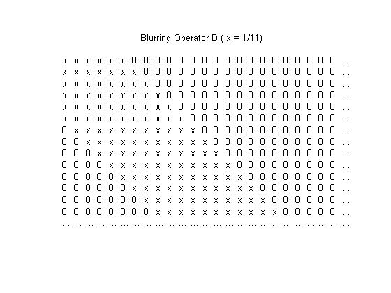
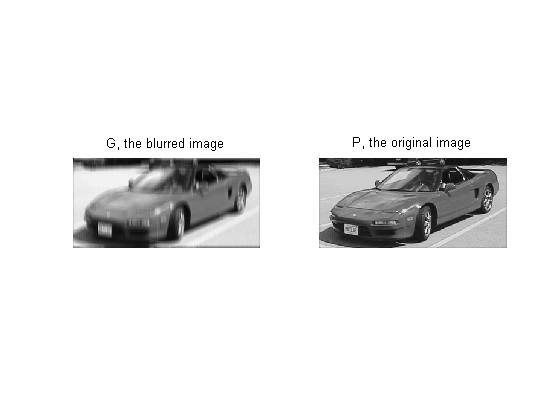
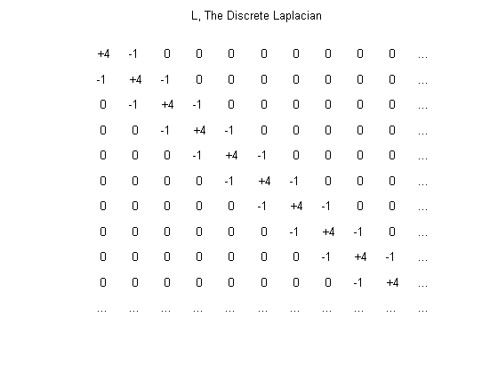
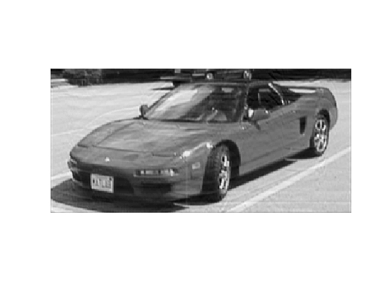

大規模な制約付き線形最小二乗法
このデモでは、不明瞭なイメージの修正で、大規模な制約付き線形最小二乗最適化問題を解くために、Optimization Toolbox™ がどのように使用されるかを示します。
Joe の車に座っている Mary Ann と Matthew の写真に、動きによるブレを追加した後、元の写真の復元を試みます。元の画像は、m 行 n 列の行列 P からなる白黒画像です。行列の各要素は、黒 (0) と白 (1) の間のグレーの強度を示します。
load optdeblur P [m,n] = size(P); mn = m*n; imagesc(P); colormap(gray); axis off image; title([int2str(m) ' x ' int2str(n) ' (' int2str(mn) ') pixels'])
上下 5 ピクセル分の各ピクセルを平均することで、垂直方向の動きによるブレの影響をシミュレートできます。単一の行列乗算によってこれを行うスパース行列 D を作成します。
% Create D. blur = 5; mindex = 1:mn; nindex = 1:mn; for i = 1:blur mindex=[mindex i+1:mn 1:mn-i]; nindex=[nindex 1:mn-i i+1:mn]; end D = sparse(mindex,nindex,1/(2*blur+1)); % Draw a picture of D. cla axis off ij xs = 25; ys = 15; xlim([0,xs+1]); ylim([0,ys+1]); [ix,iy] = meshgrid(1:(xs-1),1:(ys-1)); l = abs(ix-iy)<=5; text(ix(l),iy(l),'x') text(ix(~l),iy(~l),'0') text(xs*ones(ys,1),1:ys,'...'); text(1:xs,ys*ones(xs,1),'...'); title('Blurring Operator D ( x = 1/11)')
この演算子とイメージを乗算して、不鮮明なイメージを作成します。P は元のイメージ、D は演算子、G は不鮮明なイメージです。
G = D*P(:); imagesc(reshape(G,m,n)); axis off image;
動いているエレベーターから、この不鮮明な写真 G を Joe が撮影したとしましょう。エレベーターの速度がわかっているため、不鮮明にする演算子 D がわかっていると仮定します。どの程度、ブレを取り除くことができて、元のイメージ P に戻せるでしょうか。
最も簡単な方法は、以下の最小二乗問題を解くことです。
min( || D*P(:) - G||^2 )
subplot(1,2,1); imagesc(reshape(G(:),m,n)); axis off image; title('G, the blurred image'); subplot(1,2,2); imagesc(reshape(P(:),m,n)); axis off image; title('P, the original image');
実際には、この簡単な方法によって得られる結果にノイズが含まれることが多いです。これを補うために、正規化項が追加されます。
0.0004*|| L*P ||^2
L は、各ピクセルを、それを取り囲むピクセルに関連付ける離散ラプラシアンです。グレー強度が必要なことがわかっているため、P の要素が 0 ～ 1 の範囲に収まらなければならないという制約も課します。
% Create L. L = sparse( [1:mn,2:mn,1:mn-1], [1:mn,1:mn-1,2:mn], ... [4*ones(1,mn) -1*ones(1,2*(mn-1))] ); % Draw a picture of L. subplot(1,1,1) ; delete(gca); axis ij axis off; xs=11; ys=11; xlim([0,xs+1]); ylim([0,ys+1]); [ix,iy]=meshgrid(1:(xs-1),1:(ys-1)); four=(ix==iy); one=(abs(ix-iy)==1); text(ix(one),iy(one),'-1') text(ix(four),iy(four),'+4') text(ix(~four & ~one),iy(~four & ~one),' 0') text(xs*ones(ys,1),1:ys,'...'); text(1:xs,ys*ones(xs,1),'...'); title('L, The Discrete Laplacian')
ブレが除去された写真を得るために、P について解きたいと思います。
min( || D*P(:) - G(:) ||^2 + 0.0004*|| L*P(:) ||^2 )
A と b を定義することで、この式を簡略化できます。
A = [D ; 0.02*L]; b = [ G(:) ; zeros(mn,1) ];
これにより、上記の方程式は以下のように変更されます。
min( || A*P(:) - b ||^2 )
これは、0<=P<=1 という制約に従います。行列 D と L の両方が各ピクセルを、その隣の少数のピクセルに関連付けます。これにより、A が、構造化されたスパース行列になります。
A = [D ; 0.02*L]; b = [ G(:) ; zeros(mn,1) ]; spy(A'); axis equal tight title('Structure of Matrix A''');

A はスパース行列であるため、大規模なアルゴリズムを使用してこの線形最小二乗最適化問題を解くことができます。A、b、下限、上限、およびオプションを設定して、LSQLIN を呼び出します。
options = optimset('LargeScale', 'on','Display', 'off' ); x = lsqlin(A, b, [], [], [], [], zeros(mn,1), ones(mn,1), [], options); imagesc(reshape(x,m,n)) axis off image
不鮮明な写真とブレが除去された写真を比べてみましょう。
subplot(1,2,1); imagesc(reshape(G,m,n)); axis image; axis off; title('Blurred'); subplot(1,2,2); imagesc(reshape(x,m,n)); axis image; axis off; title('De-Blurred');